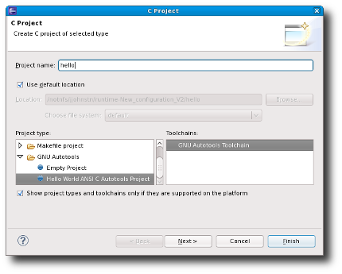
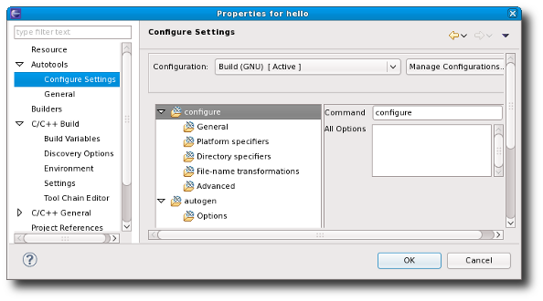

Project Templates
The GNU Autotools plug-in now provides template projects for both C and C++ in the CDT C and C++ Project Wizards. There are two templates for each language: an empty project template used when importing existing projects and a sample "Hello World" project template. The "Hello World" sample project templates provide all needed source and configuration files such that the build produces a working executable that prints to the console.
Autotools Configuration
The Autotools plug-in has been rewritten. As part of the rewrite, the configuration settings have been moved under the Autotools properties page. Configuration options are now stored in a new project xml file: .autotools. The build directory is no longer specified in the configuration settings. It is specified exclusively using the "Build Location" setting found in the C/C++ Build properties page.
If the build location is not set, then by default, the initial build will occur in the top-level project directory. Subsequent builds will build in new directories which are named "build-${CfgName}" where ${CfgName} is the name of the configuration. If this behaviour is not desired, it can be turned off from the head Autotools property page.